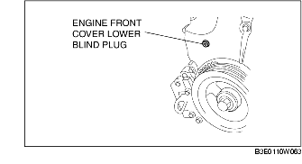
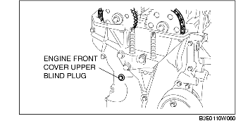
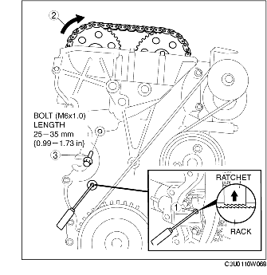

VALVE CLEARANCE ADJUSTMENT [LF]
B3E011012111W04
1. Remove the plug hole plate. (See PLUG HOLE PLATE REMOVAL/INSTALLATION [LF].)
2. Remove the battery cover. (See BATTERY REMOVAL/INSTALLATION [LF].)
3. Disconnect the negative battery cable.
4. Disconnect the wiring harness.
5. Remove the following parts.
-
(1) Front wheel and tire (RH) (See GENERAL PROCEDURES (SUSPENSION).)
-
(2) Engine under cover and splash shield (RH)
-
(3) Ignition coils (See IGNITION COIL REMOVAL/INSTALLATION [LF].)
-
(4) Ventilation hose
-
(5) Cylinder head cover
-
(6) Engine front cover lower blind plug

-
(7) Engine front cover upper blind plug

-
(8) Cylinder block lower blind plug
6. Install the SST as shown in the figure.
7. Turn the crankshaft clockwise the crankshaft is in the No.1 cylinder TDC position (until the balance weight is attached to the SST).
8. Loosen the timing chain.
-
(1) Unlock the chain tensioner ratchet using a suitable screwdriver or equivalent tool.

-
(2) Turn the exhaust camshaft clockwise using a suitable wrench on the cast hexagon and loosen the timing chain.
-
(3) Placing the suitable bolt (M6 X 1.0 length 25mm-35mm {0.99-1.37in}) at the engine front cover upper blind plug, secure the chain guide at the position where the tension is released.
9. Hold the exhaust camshaft using a suitable wrench on the cast hexagon as shown in the figure.
10. Remove the exhaust camshaft sprocket.
11. Loosen the camshaft cap bolts in 2-3 passes in the order shown in the figure.
-
Note
-
• The cylinder head and the camshaft caps are numbered to be reassembled in their original position correctly. When removed, keep the caps with the cylinder head they were removed from. Do not mix the caps.
12. Remove the camshaft.
13. Remove the tappet.
14. Select proper adjustment shim.
-
New adjustment shim
-
= Removed shim thickness + Measured valve clearance - Standard valve clearance (IN: 0.25 mm {0.0098 in}, EX: 0.30 mm {0.0118 in})
-
Standard [Engine cold]
-
IN: 0.22-0.28 mm {0.0087-0.0110 in}
-
EX: 0.27-0.33 mm {0.0107-0.0129 in}
15. Install the camshaft with No.1 cylinder aligned with the TDC position.
16. Tighten the camshaft cap bolt with the following 2 steps.
-
Tightening torque
-
(1) 5.0-9.0 N·m
-
{51.0-91.7 kgf·cm, 44.3-79.6 in·lbf}
-
(2) 14.0-17.0 N·m
-
{1.5-1.7 kgf·m, 10.4-12.5 ft·lbf}
17. Install the exhaust camshaft sprocket.
-
Note
-
• Do not tighten the bolt for the camshaft sprocket during this step. First confirm the valve timing, then tighten the bolt.
18. Install the SST to the camshaft as shown in the figure.
19. Remove the (M6 X 1.0 length 25mm-35mm {0.99-1.37in}) bolt from the engine front cover to apply tension to the timing chain.
20. Turn the crankshaft clockwise until the crankshaft is in the No.1 cylinder TDC position (until the balance weight is attached to the SST).
21. Hold the exhaust camshaft using a suitable wrench on the cast hexagon as shown in the figure.
22. Tighten the exhaust camshaft sprocket lock bolt.
-
Tightening torque
-
69-75 N·m
-
{7.1-7.6 kgf·m, 50.9-55.3 ft·lbf}
23. Remove the SST from the camshaft.
24. Remove the SST from the block lower blind plug.
25. Rotate the crankshaft clockwise two turns until the TDC position.
-
• If not aligned, loosen the crankshaft pulley lock bolt and repeat from Step 14.
26. Apply silicone sealant to the engine front cover upper blind plug.
27. Install the following parts.
-
(1) Engine front cover upper blind plug

-
Tightening torque
-
8.0-11.5 N·m
-
{81.6-117.2 kgf·cm, 70.9-101.7 in·lbf}
-
(2) Cylinder block lower blind plug

-
Tightening torque
-
18-22 N·m
-
{1.9-2.2 kgf·m, 14-16 ft·lbf}
-
(3) New engine front cover lower blind plug

-
Tightening torque
-
10-14 N·m
-
{1.1-1.4 kgf·m, 7.4-10.3 ft·lbf}
-
(4) Cylinder head cover (See Cylinder Head Cover Installation Note.)
-
(5) Ventilation hose
-
(6) Ignition coils (See IGNITION COIL REMOVAL/INSTALLATION [LF].)
-
(7) Engine under cover and splash shield (RH)
-
(8) Front wheel and tire (RH) (See GENERAL PROCEDURES (SUSPENSION).)
28. Connect the wiring harness.
29. Connect the negative battery cable.
30. Install the battery cover. (See BATTERY REMOVAL/INSTALLATION [LF].)
31. Install the plug hole plate. (See PLUG HOLE PLATE REMOVAL/INSTALLATION [LF].)